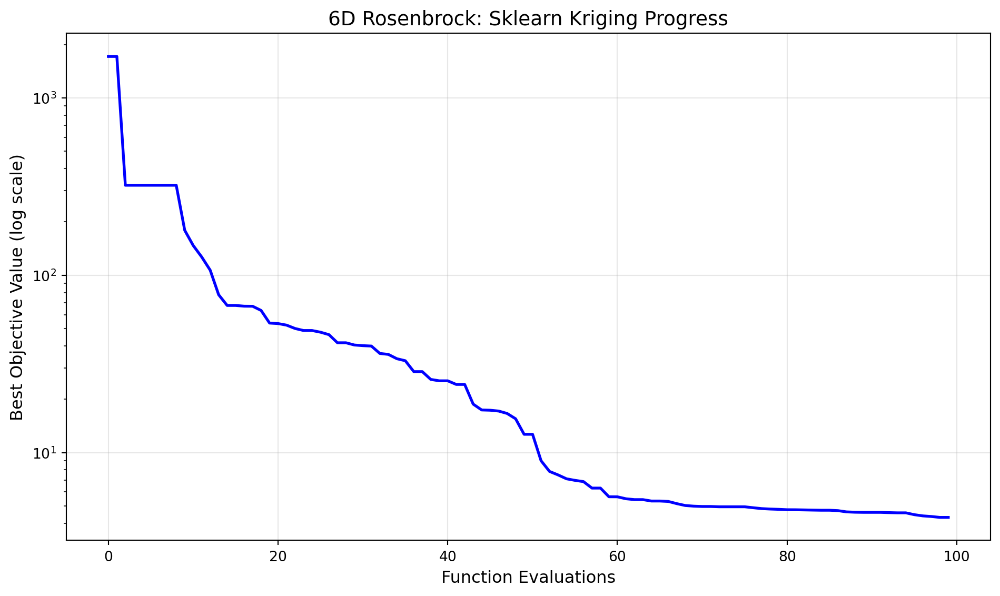
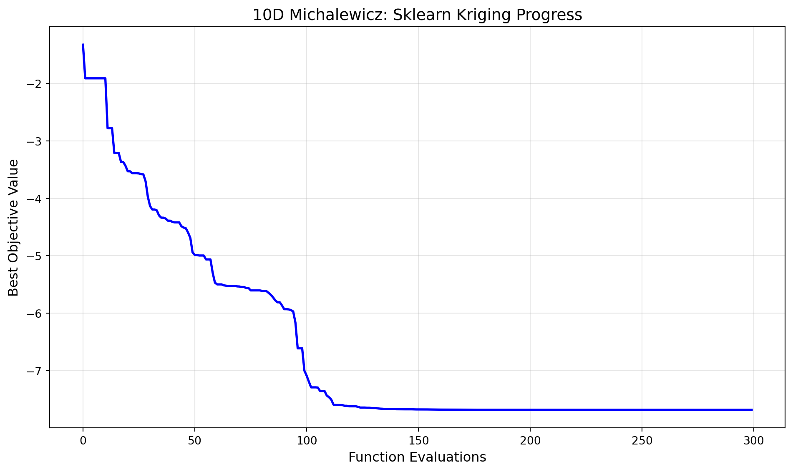

import warnings
warnings.filterwarnings("ignore")
import json
import numpy as np
from spotoptim import SpotOptim
from spotoptim.function import rosenbrock5 Benchmarking SpotOptim with Sklearn Kriging (Matern Kernel) on 6D Rosenbrock and 10D Michalewicz Functions
Note
These test functions were used during the Dagstuhl Seminar 25451 Bayesian Optimisation (Nov 02 – Nov 07, 2025), see here.
This notebook demonstrates the use of SpotOptim with sklearn’s Gaussian Process Regressor as a surrogate model.
5.1 SpotOptim with Sklearn Kriging in 6 Dimensions: Rosenbrock Function
This section demonstrates how to use the SpotOptim class with sklearn’s Gaussian Process Regressor (using Matern kernel) as a surrogate on the 6-dimensional Rosenbrock function. We use a maximum of 100 function evaluations.
5.1.1 Define the 6D Rosenbrock Function
dim = 6
lower = np.full(dim, -2.0)
upper = np.full(dim, 2.0)
bounds = list(zip(lower, upper))
fun = rosenbrock
max_iter = 1005.1.2 Set up SpotOptim Parameters
n_initial = dim
seed = 3215.1.3 Sklearn Gaussian Process Regressor as Surrogate
from sklearn.gaussian_process import GaussianProcessRegressor
from sklearn.gaussian_process.kernels import Matern, ConstantKernel
# Use a Matern kernel instead of the standard RBF kernel
kernel = ConstantKernel(1.0, (1e-2, 1e12)) * Matern(
length_scale=1.0,
length_scale_bounds=(1e-4, 1e2),
nu=2.5
)
surrogate = GaussianProcessRegressor(kernel=kernel, n_restarts_optimizer=100)
# Create SpotOptim instance with sklearn surrogate
opt_rosen = SpotOptim(
fun=fun,
bounds=bounds,
n_initial=n_initial,
max_iter=max_iter,
surrogate=surrogate,
seed=seed,
verbose=1
)
# Run optimization
result_rosen = opt_rosen.optimize()TensorBoard logging disabled
Initial best: f(x) = 321.834153
Iteration 1: f(x) = 3523.038673
Iteration 2: f(x) = 1535.228465
Iteration 3: f(x) = 326.969902
Iteration 4: New best f(x) = 179.356127
Iteration 5: New best f(x) = 147.216834
Iteration 6: New best f(x) = 126.873160
Iteration 7: New best f(x) = 106.902994
Iteration 8: New best f(x) = 77.670929
Iteration 9: New best f(x) = 67.615680
Iteration 10: f(x) = 70.957091
Iteration 11: New best f(x) = 66.964097
Iteration 12: New best f(x) = 66.897610
Iteration 13: New best f(x) = 63.366662
Iteration 14: New best f(x) = 53.781146
Iteration 15: New best f(x) = 53.432943
Iteration 16: New best f(x) = 52.354490
Iteration 17: New best f(x) = 50.133482
Iteration 18: New best f(x) = 48.831406
Iteration 19: f(x) = 49.429750
Iteration 20: New best f(x) = 47.772558
Iteration 21: New best f(x) = 46.270597
Iteration 22: New best f(x) = 41.646374
Iteration 23: f(x) = 43.096660
Iteration 24: New best f(x) = 40.449631
Iteration 25: New best f(x) = 40.111079
Iteration 26: New best f(x) = 39.904437
Iteration 27: New best f(x) = 36.250474
Iteration 28: New best f(x) = 35.803272
Iteration 29: New best f(x) = 33.862477
Iteration 30: New best f(x) = 32.975768
Iteration 31: New best f(x) = 28.630850
Iteration 32: f(x) = 29.099457
Iteration 33: New best f(x) = 25.875991
Iteration 34: New best f(x) = 25.413278
Iteration 35: f(x) = 25.599137
Iteration 36: New best f(x) = 24.248016
Iteration 37: f(x) = 25.598972
Iteration 38: New best f(x) = 18.776459
Iteration 39: New best f(x) = 17.406282
Iteration 40: New best f(x) = 17.345425
Iteration 41: New best f(x) = 17.160078
Iteration 42: New best f(x) = 16.630905
Iteration 43: New best f(x) = 15.524994
Iteration 44: New best f(x) = 12.689502
Iteration 45: f(x) = 13.393696
Iteration 46: New best f(x) = 9.003627
Iteration 47: New best f(x) = 7.835152
Iteration 48: New best f(x) = 7.490475
Iteration 49: New best f(x) = 7.120460
Iteration 50: New best f(x) = 6.978307
Iteration 51: New best f(x) = 6.866241
Iteration 52: New best f(x) = 6.312234
Iteration 53: f(x) = 6.675089
Iteration 54: New best f(x) = 5.639227
Iteration 55: New best f(x) = 5.636110
Iteration 56: New best f(x) = 5.495650
Iteration 57: New best f(x) = 5.434641
Iteration 58: f(x) = 5.463996
Iteration 59: New best f(x) = 5.336320
Iteration 60: New best f(x) = 5.336302
Iteration 61: New best f(x) = 5.306700
Iteration 62: New best f(x) = 5.157494
Iteration 63: New best f(x) = 5.034356
Iteration 64: New best f(x) = 4.992101
Iteration 65: New best f(x) = 4.971148
Iteration 66: f(x) = 5.000615
Iteration 67: New best f(x) = 4.951725
Iteration 68: f(x) = 4.955595
Iteration 69: f(x) = 4.952206
Iteration 70: f(x) = 4.957051
Iteration 71: New best f(x) = 4.891351
Iteration 72: New best f(x) = 4.836014
Iteration 73: New best f(x) = 4.808806
Iteration 74: New best f(x) = 4.790320
Iteration 75: New best f(x) = 4.766336
Iteration 76: New best f(x) = 4.763944
Iteration 77: New best f(x) = 4.754039
Optimizer candidate 1/3 was duplicate after rounding.
Iteration 78: New best f(x) = 4.743707
Optimizer candidate 1/3 was duplicate after rounding.
Iteration 79: New best f(x) = 4.734977
Iteration 80: f(x) = 4.738487
Iteration 81: New best f(x) = 4.709800
Iteration 82: New best f(x) = 4.634881
Iteration 83: New best f(x) = 4.614232
Iteration 84: New best f(x) = 4.606672
Iteration 85: f(x) = 4.609108
Iteration 86: f(x) = 4.614317
Iteration 87: New best f(x) = 4.590308
Iteration 88: New best f(x) = 4.577722
Iteration 89: f(x) = 4.598574
Iteration 90: New best f(x) = 4.468878
Iteration 91: New best f(x) = 4.399906
Iteration 92: New best f(x) = 4.365180
Iteration 93: New best f(x) = 4.314824
Iteration 94: f(x) = 4.329449print(f"[6D] Sklearn Kriging: min y = {result_rosen.fun:.4f} at x = {result_rosen.x}")
print(f"Number of function evaluations: {result_rosen.nfev}")
print(f"Number of iterations: {result_rosen.nit}")[6D] Sklearn Kriging: min y = 4.3148 at x = [ 0.29833867 0.09607375 0.00994589 0.02462268 -0.0029224 0.00395595]
Number of function evaluations: 100
Number of iterations: 945.1.4 Visualize Optimization Progress
import matplotlib.pyplot as plt
# Plot the optimization progress
plt.figure(figsize=(10, 6))
plt.semilogy(np.minimum.accumulate(opt_rosen.y_), 'b-', linewidth=2)
plt.xlabel('Function Evaluations', fontsize=12)
plt.ylabel('Best Objective Value (log scale)', fontsize=12)
plt.title('6D Rosenbrock: Sklearn Kriging Progress', fontsize=14)
plt.grid(True, alpha=0.3)
plt.tight_layout()
plt.show()
5.1.5 Evaluation of Multiple Repeats
To perform 30 repeats and collect statistics:
# Perform 30 independent runs
n_repeats = 30
results = []
print(f"Running {n_repeats} independent optimizations...")
for i in range(n_repeats):
kernel_i = ConstantKernel(1.0, (1e-2, 1e12)) * Matern(
length_scale=1.0,
length_scale_bounds=(1e-4, 1e2),
nu=2.5
)
surrogate_i = GaussianProcessRegressor(kernel=kernel_i, n_restarts_optimizer=100)
opt_i = SpotOptim(
fun=fun,
bounds=bounds,
n_initial=n_initial,
max_iter=max_iter,
surrogate=surrogate_i,
seed=seed + i, # Different seed for each run
verbose=0
)
result_i = opt_i.optimize()
results.append(result_i.fun)
if (i + 1) % 10 == 0:
print(f" Completed {i + 1}/{n_repeats} runs")
# Compute statistics
mean_result = np.mean(results)
std_result = np.std(results)
min_result = np.min(results)
max_result = np.max(results)
print(f"\nResults over {n_repeats} runs:")
print(f" Mean of best values: {mean_result:.6f}")
print(f" Std of best values: {std_result:.6f}")
print(f" Min of best values: {min_result:.6f}")
print(f" Max of best values: {max_result:.6f}")5.2 SpotOptim with Sklearn Kriging in 10 Dimensions: Michalewicz Function
This section demonstrates how to use the SpotOptim class with sklearn’s Gaussian Process Regressor (using Matern kernel) as a surrogate on the 10-dimensional Michalewicz function. We use a maximum of 300 function evaluations.
5.2.1 Define the 10D Michalewicz Function
from spotoptim.function import michalewicz
dim = 10
lower = np.full(dim, 0.0)
upper = np.full(dim, np.pi)
bounds = list(zip(lower, upper))
fun = michalewicz
max_iter = 3005.2.2 Set up SpotOptim Parameters
n_initial = dim
seed = 3215.2.3 Sklearn Gaussian Process Regressor as Surrogate
from sklearn.gaussian_process import GaussianProcessRegressor
from sklearn.gaussian_process.kernels import Matern, ConstantKernel
# Use a Matern kernel instead of the standard RBF kernel
kernel = ConstantKernel(1.0, (1e-2, 1e12)) * Matern(
length_scale=1.0,
length_scale_bounds=(1e-4, 1e2),
nu=2.5
)
surrogate = GaussianProcessRegressor(kernel=kernel, n_restarts_optimizer=100)
# Create SpotOptim instance with sklearn surrogate
opt_micha = SpotOptim(
fun=fun,
bounds=bounds,
n_initial=n_initial,
max_iter=max_iter,
surrogate=surrogate,
seed=seed,
verbose=1
)
# Run optimization
result_micha = opt_micha.optimize()TensorBoard logging disabled
Initial best: f(x) = -1.909129
Iteration 1: f(x) = -0.471859
Iteration 2: New best f(x) = -2.778236
Iteration 3: f(x) = -1.576805
Iteration 4: f(x) = -1.694636
Iteration 5: New best f(x) = -3.210534
Iteration 6: f(x) = -2.820074
Iteration 7: f(x) = -2.982435
Iteration 8: New best f(x) = -3.366658
Iteration 9: f(x) = -3.201316
Iteration 10: New best f(x) = -3.432736
Iteration 11: New best f(x) = -3.528156
Iteration 12: f(x) = -3.504752
Iteration 13: New best f(x) = -3.562717
Iteration 14: f(x) = -3.547657
Iteration 15: f(x) = -3.555867
Iteration 16: New best f(x) = -3.565735
Iteration 17: New best f(x) = -3.577384
Iteration 18: New best f(x) = -3.582612
Iteration 19: New best f(x) = -3.704657
Iteration 20: New best f(x) = -3.972933
Iteration 21: New best f(x) = -4.135466
Iteration 22: New best f(x) = -4.194094
Iteration 23: f(x) = -4.120031
Iteration 24: New best f(x) = -4.209313
Iteration 25: New best f(x) = -4.298725
Iteration 26: New best f(x) = -4.336448
Iteration 27: New best f(x) = -4.337412
Iteration 28: New best f(x) = -4.353150
Iteration 29: New best f(x) = -4.389475
Iteration 30: f(x) = -4.384071
Iteration 31: New best f(x) = -4.410736
Iteration 32: New best f(x) = -4.418271
Iteration 33: f(x) = -4.407514
Iteration 34: f(x) = -4.353613
Iteration 35: New best f(x) = -4.484922
Iteration 36: New best f(x) = -4.509187
Iteration 37: New best f(x) = -4.521613
Iteration 38: New best f(x) = -4.596606
Iteration 39: New best f(x) = -4.690066
Iteration 40: New best f(x) = -4.942106
Iteration 41: New best f(x) = -4.986791
Iteration 42: f(x) = -4.986312
Iteration 43: New best f(x) = -4.995907
Iteration 44: f(x) = -4.994020
Iteration 45: f(x) = -4.979921
Iteration 46: New best f(x) = -5.063409
Iteration 47: f(x) = -5.058708
Iteration 48: f(x) = -4.980159
Iteration 49: New best f(x) = -5.297702
Iteration 50: New best f(x) = -5.468549
Iteration 51: New best f(x) = -5.498749
Iteration 52: f(x) = -5.497947
Iteration 53: f(x) = -5.487959
Iteration 54: New best f(x) = -5.514815
Iteration 55: New best f(x) = -5.522339
Iteration 56: New best f(x) = -5.525841
Iteration 57: New best f(x) = -5.526137
Iteration 58: New best f(x) = -5.527576
Iteration 59: f(x) = -5.527452
Iteration 60: New best f(x) = -5.533811
Iteration 61: New best f(x) = -5.535790
Iteration 62: New best f(x) = -5.544709
Iteration 63: f(x) = -5.544155
Iteration 64: New best f(x) = -5.561096
Iteration 65: f(x) = -5.560080
Iteration 66: New best f(x) = -5.602849
Iteration 67: f(x) = -5.601040
Iteration 68: f(x) = -5.599975
Iteration 69: f(x) = -5.600448
Iteration 70: f(x) = -5.601739
Iteration 71: New best f(x) = -5.611824
Iteration 72: New best f(x) = -5.614666
Iteration 73: New best f(x) = -5.614724
Iteration 74: New best f(x) = -5.646139
Iteration 75: New best f(x) = -5.681798
Iteration 76: New best f(x) = -5.725515
Iteration 77: New best f(x) = -5.776742
Iteration 78: New best f(x) = -5.810207
Iteration 79: f(x) = -5.804926
Iteration 80: New best f(x) = -5.866522
Iteration 81: New best f(x) = -5.930860
Iteration 82: New best f(x) = -5.931116
Iteration 83: New best f(x) = -5.934082
Iteration 84: New best f(x) = -5.946578
Iteration 85: New best f(x) = -5.970705
Iteration 86: New best f(x) = -6.166952
Iteration 87: New best f(x) = -6.612204
Iteration 88: f(x) = -6.159317
Iteration 89: f(x) = -6.365376
Iteration 90: New best f(x) = -7.001550
Iteration 91: New best f(x) = -7.087973
Iteration 92: New best f(x) = -7.192556
Iteration 93: New best f(x) = -7.292092
Iteration 94: f(x) = -7.275912
Iteration 95: f(x) = -7.272962
Iteration 96: New best f(x) = -7.295147
Iteration 97: New best f(x) = -7.354723
Iteration 98: f(x) = -7.346093
Iteration 99: f(x) = -7.344681
Iteration 100: New best f(x) = -7.433589
Iteration 101: New best f(x) = -7.464121
Iteration 102: New best f(x) = -7.504358
Iteration 103: New best f(x) = -7.592192
Iteration 104: New best f(x) = -7.599349
Iteration 105: New best f(x) = -7.599853
Iteration 106: f(x) = -7.599730
Iteration 107: New best f(x) = -7.600999
Iteration 108: New best f(x) = -7.613344
Iteration 109: f(x) = -7.612511
Iteration 110: New best f(x) = -7.621944
Iteration 111: New best f(x) = -7.622336
Iteration 112: f(x) = -7.622023
Iteration 113: f(x) = -7.618229
Iteration 114: New best f(x) = -7.631172
Iteration 115: New best f(x) = -7.644051
Iteration 116: f(x) = -7.643990
Iteration 117: f(x) = -7.643506
Iteration 118: New best f(x) = -7.647366
Iteration 119: f(x) = -7.647153
Iteration 120: New best f(x) = -7.651506
Iteration 121: New best f(x) = -7.651786
Iteration 122: New best f(x) = -7.652085
Iteration 123: New best f(x) = -7.659657
Iteration 124: New best f(x) = -7.663317
Iteration 125: New best f(x) = -7.665267
Iteration 126: New best f(x) = -7.668637
Iteration 127: New best f(x) = -7.668832
Iteration 128: f(x) = -7.668796
Iteration 129: f(x) = -7.668826
Iteration 130: New best f(x) = -7.669747
Iteration 131: New best f(x) = -7.672941
Iteration 132: New best f(x) = -7.673003
Iteration 133: New best f(x) = -7.673573
Iteration 134: New best f(x) = -7.674134
Iteration 135: New best f(x) = -7.674172
Iteration 136: New best f(x) = -7.674278
Iteration 137: New best f(x) = -7.674290
Iteration 138: f(x) = -7.674187
Iteration 139: New best f(x) = -7.675653
Iteration 140: New best f(x) = -7.676434
Iteration 141: f(x) = -7.676426
Iteration 142: New best f(x) = -7.676499
Iteration 143: New best f(x) = -7.676730
Iteration 144: f(x) = -7.676692
Iteration 145: New best f(x) = -7.677024
Iteration 146: New best f(x) = -7.677911
Iteration 147: New best f(x) = -7.678076
Iteration 148: New best f(x) = -7.678625
Iteration 149: f(x) = -7.678599
Iteration 150: New best f(x) = -7.679337
Iteration 151: New best f(x) = -7.679722
Iteration 152: New best f(x) = -7.679736
Iteration 153: f(x) = -7.679646
Iteration 154: New best f(x) = -7.679880
Iteration 155: f(x) = -7.679868
Iteration 156: f(x) = -7.679862
Iteration 157: f(x) = -7.679825
Iteration 158: New best f(x) = -7.680239
Iteration 159: New best f(x) = -7.680512
Iteration 160: New best f(x) = -7.680727
Iteration 161: New best f(x) = -7.680837
Iteration 162: New best f(x) = -7.681248
Iteration 163: New best f(x) = -7.681341
Iteration 164: New best f(x) = -7.681354
Iteration 165: New best f(x) = -7.681369
Iteration 166: New best f(x) = -7.681410
Iteration 167: New best f(x) = -7.681591
Iteration 168: New best f(x) = -7.681591
Iteration 169: New best f(x) = -7.681619
Iteration 170: New best f(x) = -7.681687
Iteration 171: New best f(x) = -7.681701
Iteration 172: New best f(x) = -7.681711
Iteration 173: New best f(x) = -7.681718
Iteration 174: New best f(x) = -7.681722
Iteration 175: f(x) = -7.681710
Iteration 176: New best f(x) = -7.681785
Iteration 177: New best f(x) = -7.681847
Iteration 178: New best f(x) = -7.681861
Iteration 179: New best f(x) = -7.681865
Iteration 180: f(x) = -7.681865
Iteration 181: New best f(x) = -7.681871
Iteration 182: New best f(x) = -7.681881
Iteration 183: New best f(x) = -7.681925
Iteration 184: New best f(x) = -7.681928
Iteration 185: f(x) = -7.681927
Iteration 186: New best f(x) = -7.681929
Iteration 187: New best f(x) = -7.681930
Iteration 188: f(x) = -7.681929
Iteration 189: New best f(x) = -7.681931
Iteration 190: New best f(x) = -7.681933
Iteration 191: f(x) = -7.681920
Iteration 192: New best f(x) = -7.681934
Iteration 193: New best f(x) = -7.681947
Iteration 194: New best f(x) = -7.681954
Iteration 195: New best f(x) = -7.681954
Iteration 196: f(x) = -7.681953
Iteration 197: New best f(x) = -7.681954
Iteration 198: New best f(x) = -7.681962
Iteration 199: f(x) = -7.640770
Iteration 200: New best f(x) = -7.681967
Iteration 201: New best f(x) = -7.681970
Iteration 202: New best f(x) = -7.681972
Iteration 203: New best f(x) = -7.681973
Iteration 204: f(x) = -7.681972
Iteration 205: f(x) = -7.681971
Iteration 206: New best f(x) = -7.681974
Iteration 207: f(x) = -7.681969
Iteration 208: f(x) = -7.681973
Iteration 209: New best f(x) = -7.681975
Iteration 210: f(x) = -7.681974
Iteration 211: New best f(x) = -7.681976
Iteration 212: f(x) = -7.681976
Iteration 213: f(x) = -7.681974
Iteration 214: f(x) = -7.681973
Iteration 215: f(x) = -7.681974
Iteration 216: f(x) = -7.681974
Iteration 217: f(x) = -7.681975
Iteration 218: New best f(x) = -7.681978
Iteration 219: New best f(x) = -7.681979
Iteration 220: f(x) = -7.681979
Iteration 221: f(x) = -7.681978
Iteration 222: f(x) = -7.681977
Iteration 223: New best f(x) = -7.681981
Iteration 224: f(x) = -7.681978
Iteration 225: New best f(x) = -7.681985
Iteration 226: New best f(x) = -7.681986
Iteration 227: New best f(x) = -7.681986
Iteration 228: New best f(x) = -7.681987
Iteration 229: f(x) = -7.681987
Iteration 230: f(x) = -7.681985
Iteration 231: f(x) = -7.681985
Iteration 232: f(x) = -7.681986
Iteration 233: f(x) = -7.681984
Iteration 234: f(x) = -7.681985
Iteration 235: New best f(x) = -7.681988
Iteration 236: f(x) = -7.681987
Iteration 237: f(x) = -7.681985
Iteration 238: f(x) = -7.681988
Iteration 239: f(x) = -1.910330
Iteration 240: f(x) = -7.681988
Iteration 241: New best f(x) = -7.681990
Iteration 242: f(x) = -7.681987
Iteration 243: f(x) = -7.681989
Iteration 244: f(x) = -7.681986
Iteration 245: New best f(x) = -7.681990
Iteration 246: f(x) = -7.681989
Iteration 247: f(x) = -7.681989
Iteration 248: f(x) = -7.681989
Iteration 249: New best f(x) = -7.681990
Iteration 250: f(x) = -7.681987
Iteration 251: f(x) = -7.681989
Iteration 252: New best f(x) = -7.681991
Iteration 253: f(x) = -7.681990
Iteration 254: f(x) = -7.681989
Iteration 255: f(x) = -7.681990
Iteration 256: f(x) = -7.681990
Iteration 257: f(x) = -7.681989
Optimizer candidate 1/3 was duplicate after rounding.
Iteration 258: f(x) = -7.628659
Iteration 259: f(x) = -7.681990
Iteration 260: New best f(x) = -7.681991
Iteration 261: f(x) = -7.681989
Iteration 262: f(x) = -7.681990
Iteration 263: f(x) = -7.681990
Iteration 264: f(x) = -7.681991
Iteration 265: f(x) = -7.681991
Iteration 266: f(x) = -7.681989
Optimizer candidate 1/3 was duplicate after rounding.
Iteration 267: f(x) = -7.626966
Iteration 268: f(x) = -7.681990
Iteration 269: f(x) = -7.681990
Iteration 270: f(x) = -7.681990
Iteration 271: New best f(x) = -7.681991
Iteration 272: f(x) = -7.681988
Iteration 273: f(x) = -7.681990
Iteration 274: f(x) = -7.681990
Iteration 275: f(x) = -7.681990
Iteration 276: f(x) = -7.681988
Iteration 277: f(x) = -7.681990
Iteration 278: f(x) = -7.681990
Iteration 279: f(x) = -7.681991
Iteration 280: f(x) = -7.681990
Iteration 281: New best f(x) = -7.681991
Iteration 282: f(x) = -7.620137
Iteration 283: f(x) = -7.681990
Iteration 284: f(x) = -7.681990
Iteration 285: f(x) = -7.681990
Iteration 286: f(x) = -7.681991
Iteration 287: f(x) = -7.681989
Iteration 288: f(x) = -7.681989
Iteration 289: f(x) = -7.681991
Iteration 290: New best f(x) = -7.681992print(f"[10D] Sklearn Kriging: min y = {result_micha.fun:.4f} at x = {result_micha.x}")
print(f"Number of function evaluations: {result_micha.nfev}")
print(f"Number of iterations: {result_micha.nit}")[10D] Sklearn Kriging: min y = -7.6820 at x = [2.20306769 2.71108932 2.21933352 2.4819902 2.62720088 2.02747601
2.22106171 1.36057138 1.28283977 1.21704806]
Number of function evaluations: 300
Number of iterations: 2905.2.4 Visualize Optimization Progress
import matplotlib.pyplot as plt
# Plot the optimization progress
plt.figure(figsize=(10, 6))
plt.plot(np.minimum.accumulate(opt_micha.y_), 'b-', linewidth=2)
plt.xlabel('Function Evaluations', fontsize=12)
plt.ylabel('Best Objective Value', fontsize=12)
plt.title('10D Michalewicz: Sklearn Kriging Progress', fontsize=14)
plt.grid(True, alpha=0.3)
plt.tight_layout()
plt.show()
5.2.5 Evaluation of Multiple Repeats
To perform 30 repeats and collect statistics:
# Perform 30 independent runs
n_repeats = 30
results = []
print(f"Running {n_repeats} independent optimizations...")
for i in range(n_repeats):
kernel_i = ConstantKernel(1.0, (1e-2, 1e12)) * Matern(
length_scale=1.0,
length_scale_bounds=(1e-4, 1e2),
nu=2.5
)
surrogate_i = GaussianProcessRegressor(kernel=kernel_i, n_restarts_optimizer=100)
opt_i = SpotOptim(
fun=fun,
bounds=bounds,
n_initial=n_initial,
max_iter=max_iter,
surrogate=surrogate_i,
seed=seed + i, # Different seed for each run
verbose=0
)
result_i = opt_i.optimize()
results.append(result_i.fun)
if (i + 1) % 10 == 0:
print(f" Completed {i + 1}/{n_repeats} runs")
# Compute statistics
mean_result = np.mean(results)
std_result = np.std(results)
min_result = np.min(results)
max_result = np.max(results)
print(f"\nResults over {n_repeats} runs:")
print(f" Mean of best values: {mean_result:.6f}")
print(f" Std of best values: {std_result:.6f}")
print(f" Min of best values: {min_result:.6f}")
print(f" Max of best values: {max_result:.6f}")5.3 Comparison: SpotOptim vs SpotPython
The SpotOptim package provides a scipy-compatible interface for Bayesian optimization with the following key features:
- Scipy-compatible API: Returns
OptimizeResultobjects that work seamlessly with scipy’s optimization ecosystem - Custom Surrogates: Supports any sklearn-compatible surrogate model (as demonstrated with GaussianProcessRegressor)
- Flexible Interface: Simplified parameter specification with bounds, n_initial, and max_iter
- Analytical Test Functions: Built-in test functions (rosenbrock, ackley, michalewicz) for benchmarking
The main differences from spotpython are:
- SpotOptim: Uses
bounds,n_initial,max_iterparameters with scipy-style interface - SpotPython: Uses
fun_control,design_control,surrogate_controlwith more complex configuration
Both packages support custom surrogates and provide powerful Bayesian optimization capabilities.
5.4 Summary
This notebook demonstrated how to:
- Use
SpotOptimwith sklearn’s Gaussian Process Regressor (Matern kernel) as a surrogate - Optimize 6D Rosenbrock function with 100 evaluations
- Optimize 10D Michalewicz function with 300 evaluations
- Visualize optimization progress
- Perform multiple independent runs for statistical analysis
The results show that SpotOptim with sklearn surrogates provides effective Bayesian optimization for challenging benchmark functions.
5.5 Jupyter Notebook
Note
- The Jupyter-Notebook of this chapter is available on GitHub in the Sequential Parameter Optimization Cookbook Repository
5 Benchmarking SpotOptim with Sklearn Kriging (Matern Kernel) on 6D Rosenbrock and 10D Michalewicz Functions – Sequential Parameter Optimization Cookbook 5 Benchmarking SpotOptim with Sklearn Kriging (Matern Kernel) on 6D Rosenbrock and 10D Michalewicz Functions – Sequential Parameter Optimization Cookbook 5 Benchmarking SpotOptim with Sklearn Kriging (Matern Kernel) on 6D Rosenbrock and 10D Michalewicz Functions – Sequential Parameter Optimization Cookbook Sequential Parameter Optimization Cookbook